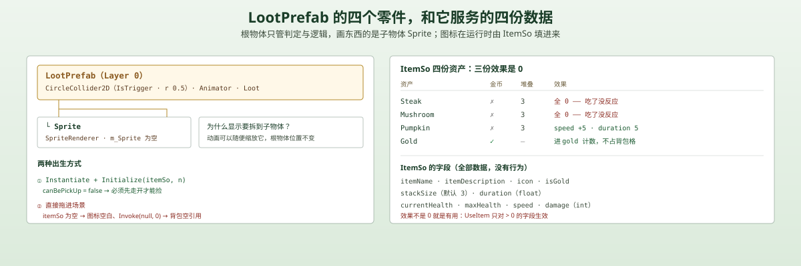
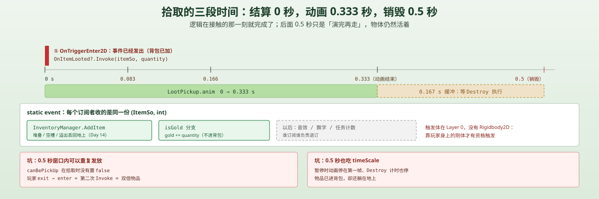

一句话说清这天的内容
做一个「地上的东西」：LootPrefab 由四个零件组成——一份 ItemSo 数据、一个只有 SpriteRenderer 的 Sprite 子物体、一个 IsTrigger 的圆形碰撞、一个 Loot 脚本。玩家走进触发区，脚本播 LootPickup（0.333 秒）、广播 OnItemLooted(itemSo, quantity)、0.5 秒后销毁自己。
这一天的产物是一条拾取链路，不是「战利品系统」——因为还没有任何东西会掉落。这一点放在最后一节讲。
脚本关系
| 文件 | 角色 | 关键内容 |
|---|---|---|
Loot.cs | 新 | 50 行：OnValidate 换图标、OnTriggerEnter2D 拾取、OnTriggerExit2D 解锁、Initialize 初始化 |
LootPrefab.prefab | 新 | 根物体（Trigger + Animator + Loot）+ Sprite 子物体 |
LootPickup.anim | 新 | 0 / 0.083 / 0.166 / 0.333 秒四个关键帧 |
Mushroom.controller | 新 | 掉落物的 AnimatorController（Idle + LootPickup） |
ItemSo + 4 个资产 | 新 | Steak / Mushroom / Pumpkin / Gold |
调用链（拾取）：
OnTriggerEnter2D（玩家进入）→ CompareTag("Player") && canBePickUp → anim.Play("LootPickup") → OnItemLooted?.Invoke(itemSo, quantity) → Destroy(gameObject, 0.5f)
调用链（背包丢出来）：
InventoryManager.DropLoot(itemSo, n) → Instantiate(lootPrefab, player.position) → Loot.Initialize(itemSo, n) → canBePickUp = false
一个地上的东西 = 数据 + 一个精灵 + 一个触发体 + 一个脚本

| 零件 | 值 | 为什么是它 |
|---|---|---|
根 LootPrefab | Layer 0 · CircleCollider2D（IsTrigger，r = 0.5）· Animator · Loot | 负责判定和逻辑，不负责显示 |
子 Sprite | SpriteRenderer，m_Sprite 为空 | 图标在运行时由 itemSo.icon 填 |
Animator | Mushroom.controller | 同一个控制器给所有物品复用 |
ItemSo | 只读数据资产 | 名字、描述、图标、是否金币、堆叠上限、属性、持续时间 |
为什么图标不直接画在根物体上？ 因为根物体一旦挂了 SpriteRenderer，它就要同时承担「缩放/翻转/动画驱动的形变」和「逻辑原点」。把显示拆到子物体后：动画可以随便缩放 Sprite（拾取时缩小消失），而根物体的 Transform 始终是「物品所在的位置」——Instantiate 的落点、SetParent 的锚点都还准。

Loot.cs：46 行里塞了四个职责
public class Loot : MonoBehaviour
{
public ItemSo itemSo;
public SpriteRenderer sr;
public Animator anim;
public bool canBePickUp = true;
public int quantity;
public static event Action<ItemSo, int> OnItemLooted;
private void OnValidate()
{
if (itemSo == null) return;
UpdateAppearance();
}
private void UpdateAppearance()
{
sr.sprite = itemSo.icon;
this.name = itemSo.itemName;
}
private void OnTriggerEnter2D(Collider2D collision)
{
if (collision.CompareTag("Player") && canBePickUp == true)
{
anim.Play("LootPickup");
OnItemLooted?.Invoke(itemSo, quantity);
Destroy(gameObject, .5f);
}
}
}设计 1：OnValidate 是编辑器的「所见即所得」开关
OnValidate 只在编辑器里、且只在「Inspector 里的值变了 / 资产重新导入」时调用。所以把 Steak.asset 拖到 itemSo 上，场景里的 Sprite 立刻换成牛排、物体名立刻变成 Steak——不用运行。
但它不会在运行时被调用。所以运行时换物品（比如 Initialize）必须自己再调一次 UpdateAppearance()，而这个方法目前是 private 的，只有 Initialize 和 OnValidate 能碰它。这就是为什么 Initialize 里要显式写一行 UpdateAppearance();——它不是冗余，是补上运行时的缺口。
设计 2：canBePickUp 是一个「防自捡」的闸门
public void Initialize(ItemSo itemSo, int quantity)
{
this.itemSo = itemSo;
this.quantity = quantity;
canBePickUp = false; // ← 先关上
UpdateAppearance();
}Initialize 只被「背包丢出来」这条路径调用，而丢出来的位置是 player.position——正好在玩家的碰撞体里面。如果 canBePickUp 初始是 true，那一帧就会触发 OnTriggerEnter2D，物品刚落地就被自己捡回去，玩家看到的是「丢不掉」。
OnTriggerExit2D 负责重新打开：
private void OnTriggerExit2D(Collider2D collision)
{
if (collision.CompareTag("Player"))
{
canBePickUp = true;
}
}于是语义变成：你必须先走开，才有资格再捡。
设计 3：事件带 quantity，因为「一堆」也是一个物体
public static event Action<ItemSo, int> OnItemLooted;一个 Loot 物体可以代表 1 个或 5 个蘑菇。如果事件只传 itemSo，接收方就没法知道数量，只能约定「一个物体 = 一件」，那 stackSize 的堆叠逻辑就得在掉落层再做一遍。
传 (itemSo, quantity) 之后，接收方拿到的是「什么 + 多少」，和背包里的 InventorySlot（itemSo + quantity）结构完全同构，接起来没有转换成本。
坑
💡 坑 1：Destroy(gameObject, .5f) 的 0.5 秒也受 timeScale 影响
LootPickup.anim 的关键帧在 0 / 0.083 / 0.166 / 0.333 秒——动画 0.333 秒，销毁给了 0.5 秒，留了 0.167 秒的缓冲，思路是对的：先播完，再消失。
问题出在「0.5 秒」用的是缩放时间。Day 6 的 StatsUI 用 Time.timeScale = 0 暂停，Day 8 的 ToggleSkillTree 也一样。于是：
| 时刻 | 发生什么 |
|---|---|
t = 0 | 玩家碰到物品，事件已结算（背包已经加进去了） |
| 玩家立刻按 Esc | timeScale = 0 |
| 暂停期间 | 动画停在第一帧，Destroy 的计时也停 |
| 玩家关闭面板 | 动画继续，0.5 秒后才消失 |
表现出来是：物品已经捡到了，但它还躺在地上，捡起来的那一瞬间被冻住了。如果玩家在暂停中截图，画面会自相矛盾。
要绕开就把销毁改成走廊：
// 先播完动画，再销毁；协程里的等待同样受 timeScale 影响，但语义更清楚
StartCoroutine(PlayAndDestroy());💡 坑 2：触发窗口里可以重复发放
canBePickUp 在拾取时没有被置回 false：
if (collision.CompareTag("Player") && canBePickUp == true)
{
anim.Play("LootPickup");
OnItemLooted?.Invoke(itemSo, quantity); // 没有 canBePickUp = false;
Destroy(gameObject, .5f);
}OnTriggerEnter2D 在一次「进入」里只触发一次，所以正常走不会重复。但那 0.5 秒里物体还活着，玩家出去再进来就是两次 Enter——两次 Invoke，双倍物品。
修法一行：Invoke 之前 canBePickUp = false;。这类「状态该关没关」的 bug 和 Day 7 那个「血量归零但没销毁」是同一种：事件发出去了，但对象的状态还停在「可用」。
💡 坑 3：prefab 的空数据会造出一个「看不见、也捡不到」的东西
LootPrefab.prefab 里 itemSo 是空的、quantity 是 0、Sprite 的 m_Sprite 是空的。
如果直接把它拖进场景当摆设：
OnValidate里if (itemSo == null) return;—— 什么都不会发生（不会报错）- 运行时
UpdateAppearance也不会被调用（没有Start调它） - 玩家走过去：
CompareTag通过、canBePickUp是true、动画播了、OnItemLooted?.Invoke(null, 0)发出去了 - 背包收到
(null, 0)，AddItem第一行itemSo.isGold直接空引用
这个 prefab 天生只能被 Initialize 驱动，不能手摆。 这种情况下最好在 Awake 里加一句自检：
private void Awake()
{
if (itemSo == null) Debug.LogError("Loot 必须在运行时 Initialize，不能直接摆在场景里");
}💡 坑 4：没有 Rigidbody2D，触发靠玩家的刚体兜着
LootPrefab 上只有 CircleCollider2D（IsTrigger），没有刚体。Unity 2D 的触发要求至少一方有 Rigidbody2D——现在能工作，纯粹因为 Player 身上有动态刚体。
哪天把玩家改成 Kinematic（很多 2D 角色控制器会这么干），或者用 CharacterController2D 那类自己算位移的方案，触发就会静默失效：走上去没反应、也不报错。
要稳就得给掉落物自己加一个 Rigidbody2D（Body Type = Kinematic、Simulated = true），让它自己也有触发资格。
💡 坑 5：this.name 只在编辑器里改
UpdateAppearance 里有一行 this.name = itemSo.itemName;。但它在编辑器里跑（OnValidate），所以 Hierarchy 里看到的是 Steak、Pumpkin——很清爽。
运行时 Initialize 也会调它，所以「丢出去的」也有名字。但直接 Instantiate 的（比如你写测试代码）名字还是 LootPrefab(Clone)。物体一多，Hierarchy 里就是一排 LootPrefab(Clone)、LootPrefab(Clone) (1)……调试时根本分不清哪个是哪个。
命名最好在 Initialize 里单独做，并且带上数量（Steak x3），而不是复用显示逻辑。
💡 坑 6：没有掉落源——这套系统目前没有入口
Enemy_Health.ChangeHealth 在血量归零时做两件事：
if (currentHealth <= 0)
{
OnMonsterDefeated(expReward); // 只发经验
Destroy(gameObject);
}没有任何掉落表、没有 LootTable、没有随机权重。 跑一遍游戏，地上永远不会出现东西——因为唯一的 Loot 生成点是 InventoryManager.DropLoot，而它只在你主动丢东西或背包满了溢出时调用。
也就是说，这一天的系统真正的入口是「丢弃」，不是「击杀」。功能是通的，但玩家不会自然遇到它。这是顺序问题而不是 bug：先做容器（掉落物），再做产生容器的东西（掉落表），比反过来省事。
四份物品数据：只有一个是「能用」的
| 资产 | 名字 | 金币 | 堆叠 | 效果 | 实际表现 |
|---|---|---|---|---|---|
Gold.asset | Gold | ✓ | — | 无 | 拾取后进 gold 计数 |
Pumpkin.asset | Pumpkin | ✗ | 3 | speed +5，duration 5 | 吃下去 5 秒加速，然后掉回去 |
Mushroom.asset | Mushroom | ✗ | 3 | 无 | 捡进背包，左键吃掉，什么也不发生 |
Steak.asset | Steak | ✗ | 3（默认） | 无 | 同上 |
ItemSo 的数值字段全是 int（currentHealth / maxHealth / speed / damage），只有 duration 是 float。四份资产里三份的效果是 0——数据还没填，但系统已经能表达它们。
这也是为什么「拾取」和「使用」要分两天做：Loot 只负责把东西交出去，用不用、怎么用，是背包的事。
整体设计思路
1. 一个 prefab 服务所有物品
| 每件物品一个 prefab | 一个 prefab + SO（现在） | |
|---|---|---|
| 新增物品 | 新建 prefab + 拖图标 | 新建一个 .asset |
| 图标来源 | prefab 上写死 | itemSo.icon 运行时填 |
| 动画 | 各自一份 | 共用 Mushroom.controller |
| 缺点 | 复制粘贴、容易漂移 | 图标没填就是空的（坑 3） |
「一个 prefab + 数据」是这类系统的标准形状，代价是空数据不会报错，只会安静地显示成空白。
2. 事件 vs 直接调用
OnItemLooted 是 static，所以任何订阅者都能收到：背包（加物品）、金币（累计）、以后的音效、成就、任务计数。
如果改成 InventoryManager.Instance.AddItem(...)，Loot 就要认识背包；如果改成拖引用，每个 Loot 实例都要拖一根线——而它是 Instantiate 出来的，拖不了。
这就解释了为什么「运行时生成的东西」几乎只能用事件或单例沟通：Instantiate 出来的对象没有人在 Inspector 里给它连线。
3. 为什么「先播动画再销毁」而不是「立刻销毁」
拾取是瞬时的逻辑（那一刻物品已经进包），但表现需要时间（小动画让玩家确认「我捡到了」）。两者错开 0.5 秒，是这类反馈的标准做法：
- 逻辑：
OnTriggerEnter2D里立刻结算 - 表现：
Destroy(gameObject, 0.5f)留出演出时间
代价就是坑 1 和坑 2——这 0.5 秒里物体仍然「活着」，所有状态判断都得按「它还没死」来写。
明天要补的洞
- 没有掉落表：敌人死亡只发经验，需要
LootTable（怪物 → 物品 + 概率 + 数量）。 - 拾取不设
canBePickUp = false：0.5 秒窗口内离开再进入会双倍发放。 - 销毁计时受
timeScale：暂停时物品卡在动画第一帧，逻辑已结算。 - 没有 Rigidbody2D：触发依赖玩家的动态刚体，玩家换成 Kinematic 就静默失效。
- 空数据不报错：直接在场景摆一个
LootPrefab会造出捡不到的东西。 - 运行时命名：
LootPrefab(Clone)一排，调试困难。 - 金币也走拣取：
Gold.asset是ItemSo，但「进金币计数」要等背包那天才接上。 - 没有拾取音效/飘字：动画是唯一反馈。
一句话总结
今天把一个「地上的东西」拆成了数据、显示、判定、逻辑四份，并用一个静态事件把它交给背包：OnTriggerEnter2D → anim.Play → OnItemLooted?.Invoke → Destroy(0.5s)。链路是通的，最需要记住的是那 0.5 秒——逻辑已经结算完了，物体却还活着，所以「防重复发放」和「暂停时冻结」这两个坑都长在这段时间里。